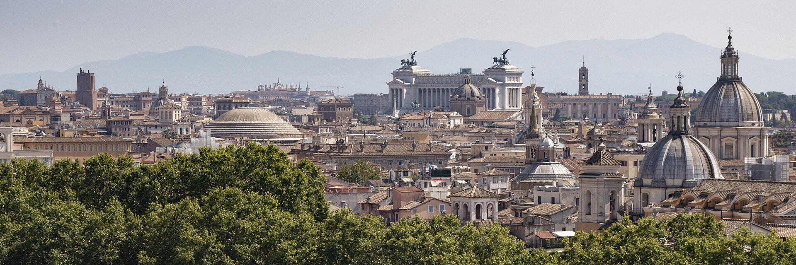
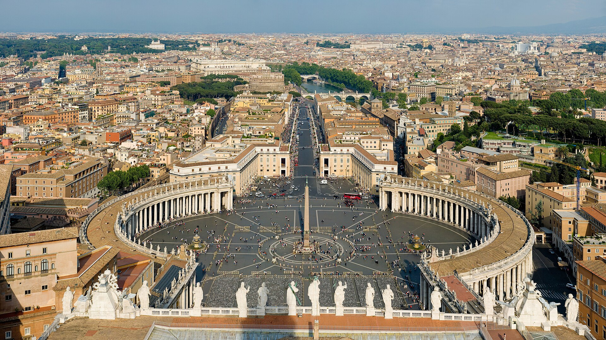
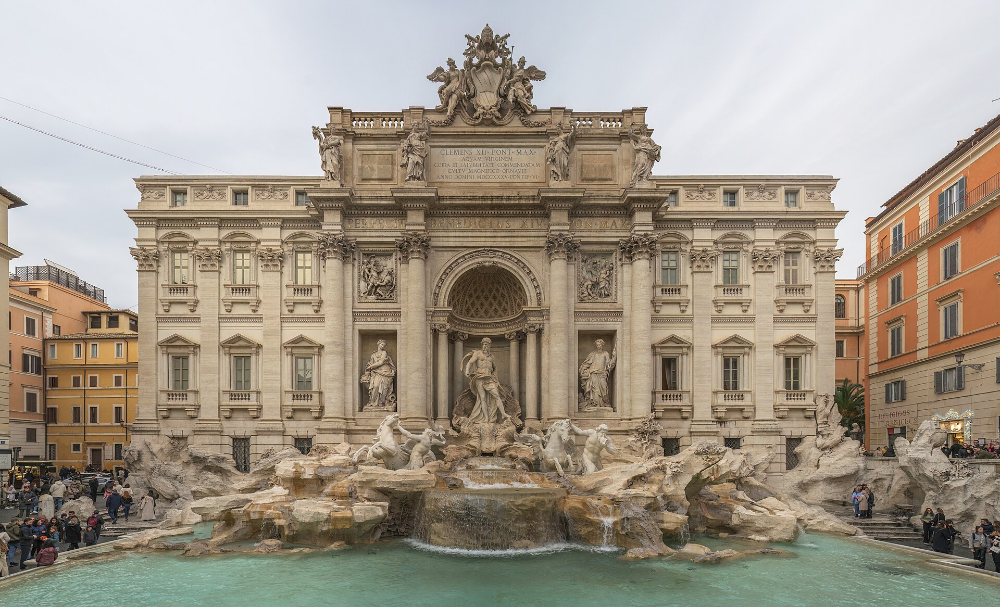
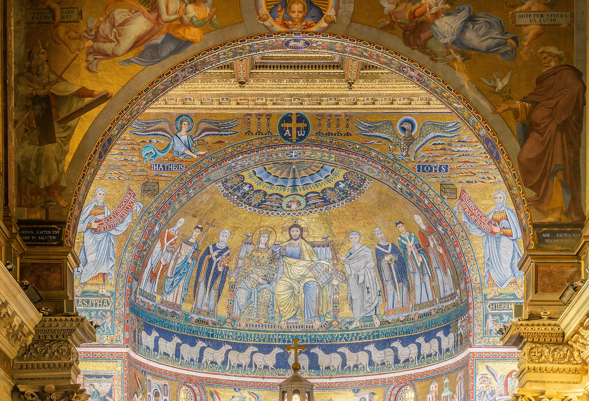
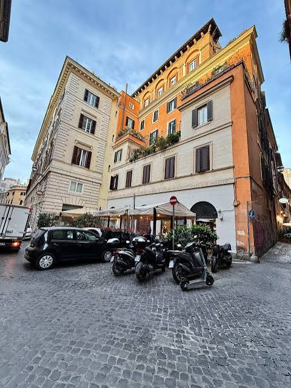
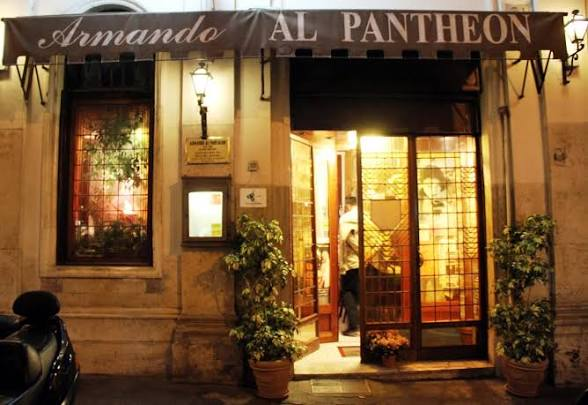
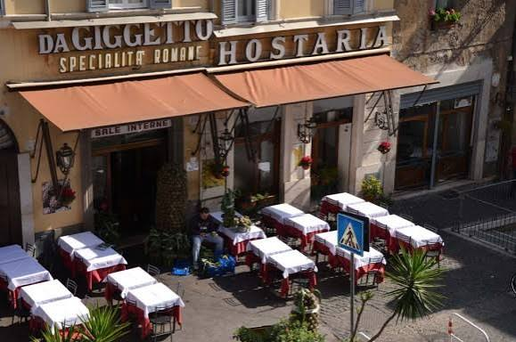

Rome
Arrivals cluster around Sunday the 9th — SO & Emily in on the 9th; Robert & Suzanne the 9th or early Monday 10th, routing via Manchester around an Everton game. Then the city's wide open through to the 15th. A few seeds to draw out.
✈ R&S routing in flux: now leaning out of Manchester around the Everton v Hull date, into Rome ~9–10 May. The easyJet Belfast direct (EZY3003, 7th) stays as the clean fallback if the football doesn't line up.





Colosseum & the Forum
The Colosseum, Roman Forum and Palatine Hill — a timed ticket, booked ahead, gets you all three.
St Peter's & the Museums
St Peter's Basilica, the Vatican Museums and the Sistine Chapel. Pre-book — the queues are legendary.
The Pantheon ⭐
The one we can't miss — 2,000 years old, the dome still unmatched. Grab the timed slot, go early or at dusk, and a coffee at Tazza d'Oro round the corner.
The baroque wander
Trevi Fountain, Piazza Navona and the Spanish Steps — all walkable in an afternoon, straight on from the Pantheon.
Trastevere & the food
Cobbled lanes and trattorias in Trastevere — cacio e pepe, carbonara, supplì, gelato. Maybe a food tour or a cooking class.
Borghese Gallery & gardens
Bernini and Caravaggio in the Galleria Borghese (timed entry, book ahead), then the park — bikes, a rowboat, and the Pincio terrace over the city.
Out of the city
Eight days is plenty for a day trip — the fountains of Tivoli (Villa d'Este & Hadrian's Villa), or the ruins of Ostia Antica, a short train from town.
Three tables worth booking
Pizza, pasta, and one gloriously Roman "something else" — all the real deal, all worth reserving ahead.

Emma Pizzeria
Proper Roman-thin pizza plus the fritti (supplì, fried artichokes), a step from Campo de' Fiori — Roscioli-quality ingredients, sit-down, built for a group. Book ahead.

Armando al Pantheon
A 1961 institution right beside the Pantheon — cacio e pepe, carbonara, amatriciana and some of the best carciofi in Rome. Tiny; book well ahead. Ties the must-see Pantheon and dinner into one. Closed Saturday night and Sunday.

Da Giggetto · the Jewish Ghetto
Carciofi alla giudia — whole artichokes fried till the leaves shatter like crisps — at Giggetto al Portico d'Ottavia, going since 1923, tables out among the Roman ruins. Closed Mondays. Ba'Ghetto and Nonna Betta are on the same street if it's full.
Where we're staying
Booked — six nights, Sun 9 → Sat 15 May, all four of us. 2 bed · 2 bath · rooftop terrace · washing machine, right by the Vatican.
Booked ✓ · Airbnb, booked by R&S
The Vatican Terrace by Michele
2 bed · 2 bath · washing machine · big private rooftop terrace with outdoor dining. Top 1% of Airbnb homes, 5.0 from 47 reviews, Superhost. £1,953 for 9–15 May (6 nights, all four), so about £977 a couple. Free cancellation until 4 May.
Steps from the Vatican Museums, Piazza del Risorgimento about 5 min walk. Exact address comes with the booking.
Around the flat
Prati, the Vatican end of town — everything below is within about a 10-minute walk.
Ottaviano · Metro A
A few minutes' walk. Line A goes straight to the Spanish Steps (Spagna) and Trevi (Barberini); change at Termini for Line B to the Colosseum and Circus Maximus. Runs ~05:30–23:30, till ~01:30 Fri & Sat, so it gets us home after dinner. €1.50 a ride (100-min BIT), or just tap a contactless card at the gate — capped at €8.50 a day.
Termini → the flat
Follow Linea A, train towards Battistini, 6 stops — Repubblica, Barberini, Spagna, Flaminio, Lepanto, Ottaviano — ~12–15 min, no changes, then a 5–10 min walk. Line A is busy and known for pickpockets, so bags in front at Termini.
Use it as a taxi
A 72-hour pass (~$44 pp) for the big sightseeing days. The "Vatican" stop is over the river at Lungotevere Tor di Nona, ~15–20 min walk, so Metro for the first leg. Buses stop ~19:00. The Metro misses the Pantheon, Navona and Trastevere — walk, bus or taxi for those.
Three local tables
Osteria Ragno d'oro — the local favourite, get the Roman artichoke, book at weekends. La cantina di Cesare — small family osteria, ring ahead, closed Sundays. Hostaria Ago e Lillo — on Piazza Risorgimento, open all day, lots of veggie options.
Not a chain in sight
Pinsa 'mpò — Roman pinsa baked to order (closed Sun). Vulió — focaccia sandwiches and bruschetta. Sfizio — bakery for breakfast, slices and grilled veg. Skip Bona Pizza on Via Ottaviano — charges by weight, €20+ for two slices.
The big shop & top-ups
Pewex City (Via Fabio Massimo) — best stocked, good value, open daily till 21:30. Tuday Conad (Via Silla) for fresh fruit, and Carrefour Express (Via Sebastiano Veniero, till 22:00) for basics.
▸ Rome's booked — edit this section as the days firm up.